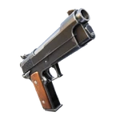
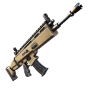
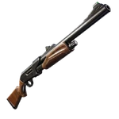
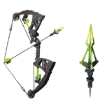
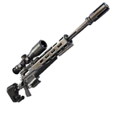
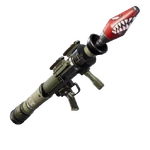
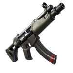

-
23Dégats6.5Cadence de tir1.8Rechargement
Pistolet
Le pistolet est une arme de poing polyvalente et rapide.
-
30Dégats5.5Cadence de tir2.3Rechargement
Fusil d'assault
Le fusil d'assaut est une arme automatique à moyenne portée.
-
90Dégats1Cadence de tir3Rechargement
Fusil à pompe
Le fusil à pompe est une arme dévastatrice à courte portée.
-
75Dégats0.8Cadence de tir2.5Rechargement
Arbalète
L'arbalète est une arme à longue portée, idéale pour des attaques précises.
-
105Dégats0.33Cadence de tir2.7Rechargement
Fusil de sniper
Le fusil de sniper est une arme de précision pour des tirs à très longue portée.
-
110Dégats0.75Cadence de tir3.5Rechargement
Lance-roquettes
Le lance-roquettes cause des dégâts massifs avec ses explosions.
-
25Dégats9Cadence de tir2Rechargement
Mitraillette
La mitraillette est une arme automatique à courte portée avec une cadence de tir élevée.